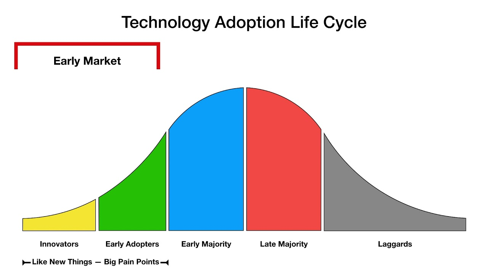
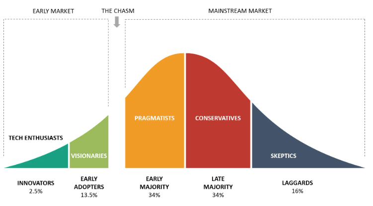
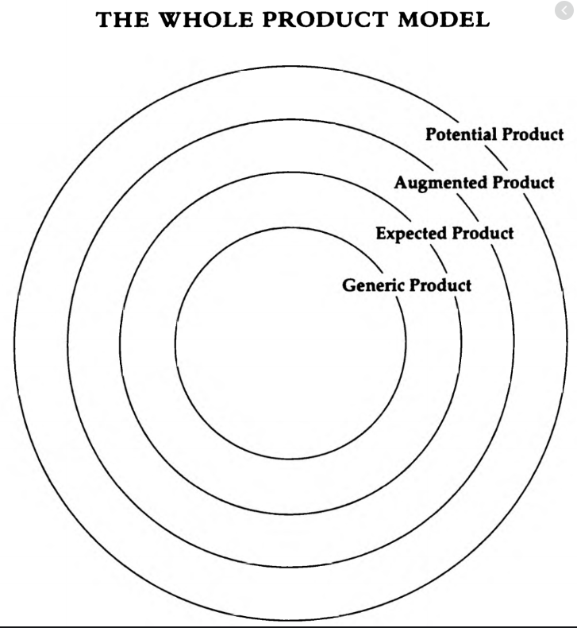
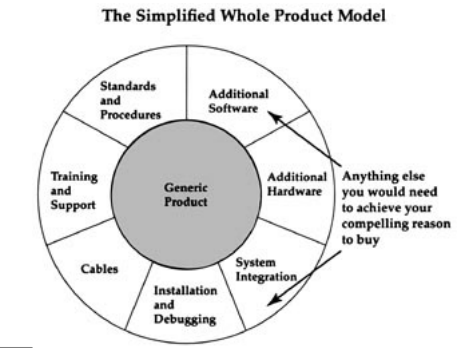
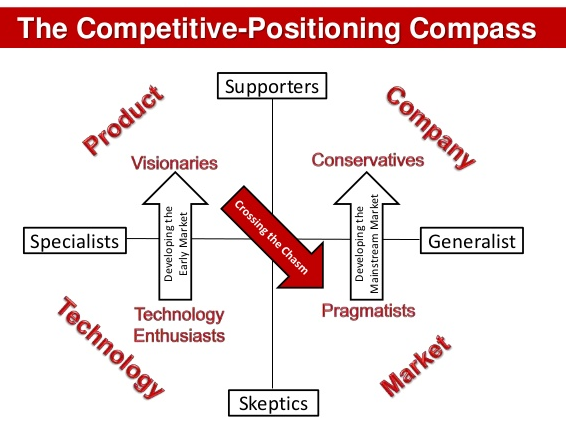
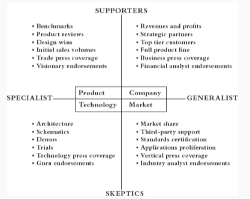

As someone who is learning the ropes of B2B Product Management and Product Marketing, this book has been deeply educational for me. Below are my notes from the book. Needless to say, If a summary of the book is a 30 minute read, it is a book worth studying not just reading.
Chapter 1
Discontinuous or Disruptive Innovation: Products that require us to change our current mode of behavior or to modify other products and services we rely on
Continuous or Sustaining Innovation: Normal upgrading of products that do not require us to change our current behavior
All new products lie on this continuum between discontinuous and continuous.

Innovators: Pursue new technology products aggressively out of curiosity and interest
Early Adopters: Adopts new technology in order to obtain a competitive advantage. Do not need references and hence are key to your business becoming viable
Early majority: Pragmatic. Looking to adopt only proven technology with good references. Constitutes 1/3 of market and fundamental to profits and growth
Late majority: More averse to using technology then the early majority. Comfortable buying only once the technology becomes a standard and there is plenty of support services. Can be a profitable segment as selling costs decreases and cost of R&D has been amortized
Laggards: Don’t want to buy new technology. Interested in buying only is they don’t have to know anything about it. E.g. breaking system in a car

In reality, there exists a gap between any of these psychographic groups. The gap represents the disconnect between groups i.e. the group on the right may not be receptive to a product presented in the same as the group to the left.
The first gap between Innovators and Early adopters exist when a new technology cannot be translated into a major new benefit.
A similar gap exists between early and late majority. This is due to the demands on the user to be technologically competent. The product needs to be exceedingly easy to adopt and use to cross this gap.
The CHASM is the gap between the early adopters and early majority. These two segments are very similar in the size of the order or sale but they buy for very different reasons. The early adopters want to adopt the technology to leap ahead of the competition and recognize that the technology is at an early stage and are willing to put up with bugs and glitches. They are looking for exponential improvement.
On the other hands, the early majority is looking at the technology to boost productivity of existing operations. They are looking for linear improvement ;evolution not revolution. Hence, they are unwilling to put up with bugs and glitches. They want want the new technology to integrate easily with the existing base. They need references from other members in the early majority cohort to adopt the new technology,not references from other early adopters.
The chasm exists because a company transitioning to the early majority is often trying to win a market for which no references exist and for whom the necessary support system has not been built to ensure a smooth transition to the new technology.
Chapter 2
Marketing strategy must change in response to the three important stages: early market, chasm and the mainstream market.
Marketing means taking actions to create, grow, maintain or defend markets.
For high tech, a market is:
- a set of actual or potential customers
- for a given set of products or services
- who have a common set of needs or wants and
- who references each other when making a buying decision
If two buyers have no way to reference each other, they are not in the same market.
It is to be noted however that the internet has the potential to consolidate fragmented markets. A buyer can easily go to an online forum and reference the experience of a buyer in a different country or a different vertical when in the pre-internet era, they would have no way to influence each other.
The tablet is a category, however the tablet as a technology has multiple markets or market segments. a market for professionals, a market for college students and a market for young children.
Innovators: The Technology Enthusiasts
- Expects the truth about the capabilities of a product i.e. no vaporware
- Requires high quality technical support
- Want early access to the latest technology
- Expects cheap prices
Innovators often are housed in the advanced technology divisions in a company, they are empowered to buy one of any product.
You can work with innovators under non-disclosure agreements to get early feedback on a product. They can champion your product within the organization or in the larger market.
Reach this segment through online forums, targeted e-mails, demos and webinars.
Early Adopters: The Visionaries
Early adopters want to leverage the technology being offered to significantly improve business outcomes. They can match the technology to a strategic opportunity, and motivate their organization to take on a high impact, high risk project. They tend to be ambitious, early career rather than seasoned executives looking for growth and personal recognition. Example: Reed Hastings moving Netflix’s tech stack to AWS.
They are aware the initiative is high risk high return, have larger budgets and are willing to invest up front to kick start a project in the hopes of out sized returns down the road.
You have to work with visionaries in projects, typically starting with a pilot and building more capabilities in a project set up with milestones and goals . Visionaries want to be closely attuned to the product development process so that they know their goals will be met. Vendors need to be able to delineate the project into productizable chunks for the larger market.
Given visionaries are pursuing a small window of opportunity to make a big market impact, they can exert a lot of pressure with hard deadlines. Therefore good account management and executive restraint are necessary.
Plan each phase of the project such that
They are realistic and attainable
Provides the vendor with a marketable product
3)Provides the customer with a concrete return that can be celebrated as a major step forward
The most important principle is the emphasis on management of expectations. Because controlling expectations is so crucial, the only practical way to do business with visionaries is through a small, top-level direct sales force
Sales force should:
- understand visionary’s goals and inspire confidence
- Be flexible and adapt to visionary’s agenda
- Negotiate so that you don’t commit to do the impossible
You can reach this segment only through technology enthusiasts or by leveraging existing relationships.
Early Majority: The Pragmatists
Pragmatists care about the company they are buying from (they typically buy only from established companies), quality of the product , infrastructure of supporting products and system interfaces and reliability of service they are getting. They are invested for the long term and control the bulk of the dollars in the market place.
They try to limit touch points with any distribution channel. Relationships with a specific sales person can be valuable. For a start up, the best way to reach this market is by entering into partnerships with accepted vendors. Value Added Resellers (VAR) who provide turnkey solutions can thrive in this market.
Pragmatists typically buy from market leaders because there will be third parties offering supporting products and services for a market leading product.
Pragmatists are reasonably price sensitive, they are willing to pay a premium for top quality or special services but otherwise want the best deal.
You reach pragmatists by being knowledgeable about issues in their industry, by attending industry conferences and trade shows, by publishing blogs and articles they read. You need referenceable customers and need to have partnerships and alliances with other vendors.
You need to have a reputation for quality and service and make yourself into the obvious supplier of choice
Late Majority: The Conservatives
Conservatives want to buy pre-assembled packages, with everything bundled at highly discounted prices.
- The packaged solution should offer a ‘whole product’ offering every element of the solution required to address the end user’s market needs without need to offer after sales support as margins are low
2)Needs a Low overhead distribution channel to reach the market. e.g. “As a service” model on the web
Focus on convenience rather than performance, user experience rather than feature sets
Dynamics of Mainstream Markets
To maintain market leadership in the mainstream market
- Keep pace with competition - being a technology leader or having the best product is not essential. Have to respond to a major breakthrough by a competitor
- Conservatives are service oriented while Tech enthusiasts are product oriented. The importance of product and service vary on a spectrum between these two.
Companies stumble during transition from visionaries to pragmatists as they fail to change the sales pitch. A company may be trumpeting it’s early success in pilots when the pragmatists wants to hear about up and running production installations. The company says ‘state of the art’ when the customer wants to hear ‘industry standard’
Chapter 3
To enter a mainstream market being controlled by a competitor, you need to find a niche or a beachhead as in the Invasion of Normandy and invest all your efforts into winning that niche. Once you have won this niche, you can expand into adjacent markets.
By providing an overabundance of support to win this niche, you can develop a solid base of references, collateral and internal procedures and documentation.
Ignore the size of the larger market opportunity and be lazer focused on winning the niche you have targeted
Given this early majority is looking for a guaranteed boost to business outcomes, it is necessary that your deliver the whole product
The whole product is the complete set of products and services needed to deliver the benefits promised to the buyer.
A whole product commitment requires you to allocate your most valuable resources to meet a customer’s requirements. It should be strategic so that you can leverage this investment into winning more customers. This is possible only if you are focused an a specific niche and a limited set of use cases.
Word of mouth marketing is essential to winning this segment of the market. By focusing on a niche and winning over 4 or 5 customers in the niche, you can create self-reinforcing word of mouth effects. Winning one or two customers in multiple markets through a sales driven approach, means your word of mouth message will peter out.
Pragmatists also prefer to buy only from market leaders. To be a market leader, you will need anywhere between 35% to 50% of the market. So the overall market or niche you are targeting should be no more than twice your expected sales.
Given the dynamics of the mainstream market, even providers of horizontally oriented offerings such as infrastructure services should focus on a vertical niche, when crossing the chasm.
While picking a target niche, ensure that
The economic value of the problem you are solving is high. Higher this value, faster the target niche will pull you out of the chasm
Line up other market segments you can move into by leveraging your initial win
the target segment is big enough to matter
it is small enough to win
good fit for your unique strengths
Chapter 4
Acknowledge that you have to pick your target market niche without very much data to go on. Informed intuition rather than analytic reasoning is your best decision making tool
In a low data environment, getting more data improves confidence but not the quality of your decision.
Instead of trying to identify a target market segment off the bat, identify a unique user scenarios with a clear use case or application of your product. These user scenarios can then be consolidated and prioritized into a list of target market segment opportunities.
Suggested Template for a user scenario:
HEADER INFORMATION:
Thumbnail information about end user, technical buyer and economic buyer. For business markets capture industry, geography, department and job title. For consumer markets, capture age, sex,economic status and social group.
If your selling SAS Enterprise Guide, the end user will be a data scientist, the technical buyer will be the IT team who installs and maintains the application, the economic buyer will be the CIO who sponsors the deal.
A DAY IN THE LIFE BEFORE:
Capture the situation in which the user is stuck with significant consequences for the economic buyer
- Scene or situation: Focus on the moment of frustration. What is going on? What is the user about to attempt?
- Desired Outcome: What is the user trying to accomplish? Why is this important?
- Attempted Approach: Without the new product, how does the user go about the task?
- Interfering factors: What foes wrong? How and why does it go wrong?
- Economic consequences: What is the impact of the user failing to accomplish the task productively?
3 . A DAY IN THE LIFE AFTER:
Replay the scenario with the new product in place.
- New approach: With the new product how does the end user go about the task?
- Enabling factors: What is it about the new approach that allows the user to get unstuck and be productive?
- Economic rewards: What are the costs avoided and benefits gained?
Once the user scenarios are developed, evaluate them against the following factors which are critical to building a go-to-market plan.
Rate each user scenario first against the four ‘showstopper’ issues:
1. Target Customer : Is there a single identifiable economic buyer fir the product, readily accessible to the sales channel we use.
2.Compelling Reason to Buy: Are the economic consequences sufficient to make any reasonable economic buyer anxious to fix the problem called out in the scenario?
3. Whole Product: Can the company find the partners and allies to build a complete solution that addresses the target customer’s compelling reason to buy? You want to be able to enter the market in three months and dominate it by the end of 12 months.
4. Competition: Has the problem already been addressed by another company such that they have crossed the chasm and occupied the space we would be targeting?
Score each scenario against these factors assigning a score from 1 -5. Rank order them and select the best scenarios for the next round. When in doubt favor scenarios where the compelling reason to buy is highest.
Now score the shortlisted set of scenarios against the following issues and rank them:
5. Partners and Allies: Do we already have relationships begun with other companies needed to fulfill the whole product?
6. Distribution: Do we have a sales channel that can call on the target customer and fulfill the whole product requirements put on distribution?
7. Pricing: Is the price of the whole product consistent with the target customer’s budget and with the value gained by fixing the broken process?
8. Positioning: Is the company credible as a provider of products and services to the target niche?
9. Next target customer: If we are successful in dominating this niche, does it facilitate entry into adjacent niches?
Chapter 5
There exits a gap between the marketing promise made to the customer and the ability of the shipped product to fulfill the promise. This gap should be be overcome by augmenting the product by a variety of services and ancillary products to make it a whole product.

Generic Product: What is shipped in the box and what is covered by the purchasing contract
Expected Product: The minimum configuration of products and services necessary to have any chance of achieving the buying objective. e.g. a WiFi or cellular connection for an iPad
Augmented Product: The product fleshed out to provide the maximum chance of achieving the buying objective E.g An iPad with email, browser , an app store etc.
Potential Product: This represents the product’s room for growth as more and more ancillary products come on the market and as customer specific enhancements are made ****e.g. The apps in the App Store
At the beginning of a disruptive innovation, the marketing battle happens at the level of the generic product but as the market matures becoming mainstream, the offerings on the inside become similar between vendors and the battle shifts to the outer layers.
Innovators take it upon themselves to make the product whole as they have the technical chops while the visionaries rely on system integrators to make the product whole. The segments to the rich of the chasm expect to get the whole product and not do any extra work to make it whole.
Pragmatists evaluate and buy whole products
Once there are more than one or two comparable products in the marketplace, then investing in R&D at the generic level has a decreasing return, while there is an increasing return from investing at the other levels.
Whole product planning is the centerpiece for developing a market domination strategy as pragmatists will commit to the candidate offering the most coherent path to a whole product . By squeezing out other alternatives, pragmatists bring about the standardization necessary to ensure good whole product development in the market place.
To cross the chasm, you need to identify the minimum commitment to whole product necessary to cross the chasm

Once these minimum commitments are identified, the ‘whole’ product manager should identify those parts the vendor will fulfill and find the right partners and allies to deliver on the rest. The goal of this partnership should be to accelerate the formation of a whole product infrastructure within a specific target segment in support of a segment -specific compelling reason to buy. The partnership should commit to co-delivering a whole product and market it cooperatively.These partnerships are tactical alliances growing out of whole product needs.
Things to Keep in mind while building these partnerships:
Review the whole product from each participant’s point of view. Make sure each vendor wins, and that no vendor gets an unfair share of the pie. Inequities here, particularly when they favor you, will instantly defeat the whole product effort—companies are naturally suspicious of each other anyway, and given any encouragement, will interpret your entire scheme as a rip-off.
Develop the whole product relationships slowly, working from existing instances of cooperation toward a more formalized program. Do not try to institutionalize cooperation in advance of credible examples that everyone can benefit from it—not the least of whom should be the customers. Also, do not recruit directly competing partners to serve the same need in the same segment—this will only discourage them from making a full commitment to your program.
With large partners, try to work from the bottom up; with small ones, from the top down. The goal in either case is to work as close as possible to where decisions that affect the customer actually get made.
Once formalized relationships are in place, use them as openings for communication only. Do not count on them to drive cooperation. Partnerships ultimately work only when specific individuals from the different companies involved choose to trust each other.
If you are working with very large partners, focus your energy on establishing relationships at the district sales office level and watch out for wasting time and effort with large corporate staffs. Conversely, if you are working with small partners, be sensitive to their limited resources and do everything you can to leverage your company to work to their advantage.
Finally, do not be surprised to discover that the most difficult partner to manage is your own company. If the partnership really is equitable, you can count on someone inside your company insisting on taking a bigger share of the benefit pie. In fighting back, look to your customers to be your truest and most powerful allies.
Chapter 6
Pragmatist buyers do not take a product category seriously until there is established competition and an established leader. This is a signal that the market is sufficiently mature to support a reasonable whole product infrastructure. In other words, pragmatists loathe to buy until they can compare.
Often in the early markets, a product has no clear competitors or alternatives. To cross the chasm one has to create the competition.
Creating the competition is the single most important marketing communication decision made in the battle to enter the mainstream
You have to position your product within a buying category that already has some established credibility with the pragmatist buyer. The buying category should have other reasonable buying choices the pragmatists are familiar with. Within this category, you have to position your product as the indisputably correct buying choice.
To create the competition, you need to identify two competitors that can be references
1) The Market Alternative: This is the vendor the target customer has been buying for years. We will seek to address the problem they address and seek to steal away the budget currently allocated to them. We of course need to solve a problem that the current solution does not address.
2) The Product Alternative: The is a company harnessing the same or similar technology that we are and is positioning itself as a technology leader. This gives credibility and provides parallels to our product. which has a different segment-specific focus.
E.g. Box positioned Microsoft Sharepoint as the market alternative and Dropbox as the product alternative.
Competitive Positioning Compass

There are four domains of value in high-tech marketing: technology, product, market, and company. As products move through the Technology Adoption Life Cycle, the domain of greatest value to the customer changes. In the early market, where decisions are dominated by technology enthusiasts and visionaries, the key value domains are technology and product. In the mainstream, where decisions are dominated by pragmatists and conservatives, the key domains are market and company. Crossing the chasm, in this context, represents a transition from product-based to market-based values.
Let us now explore how a product evolves through it’s technology adoption life cycle and how marketing efforts also need to evolve and change accordingly.
Early Market
- The Technology Enthusiasts are specialists who have deep expertise in and attach the highest value to the core technology. They are the gatekeepers to the early market and tend to be skeptical about any product but have a passion for new technology. The marketing message at this stage has to be focused on the technology component of your product - how original and advantageous it is. Once they understand and appreciate the technology, they will endorse the product. This segment can open the door to the Visionaries
- The Visionaries care about how the product can allow them to leap ahead of the competition.The marketing message here has to be focused on the value proposition of the product. Once the visionaries are convinced of this value proposition, they tend to champion your products and company.
Mainstream Market
- The Pragmatists are the gatekeepers to the mainstream market. Winning this market means that your messaging which was focused on product and on like minded specialists(Visionaries) has to change significantly - hence the chasm - to resonate with market oriented,wary generalists . The messaging here has to emphasize how your product helps the firm to tap into an unmet and significant market opportunity. This segment cares less about your specific product but can appreciate the market opportunity. Once they understand the market opportunity you create for them, they will champion your company.
- The Conservatives care about buying stable products from market leaders. The marketing message here has to focus on how your product is the industry standard and how it offers a ‘whole product’ solution.
At the initial stages of both the early and mainstream market, communications on product or company strengths is a mistake.
To cross the chasm, your messaging has to shift from a product-centric one (e.g.: cool product, easy to use, elegant architecture, product price, unique functionality) to a market-centric one(e.g. most complete whole product, solid user experience, compatibility with standards, whole product price, situational value, fit for purpose).
Positioning
Key Principles:
1.Positioning, first and foremost, is a noun, not a verb. That is, it is best understood as an attribute associated with a company or a product, and not as the marketing contortions that people go through to set up that association.
2.Positioning is the single largest influence on the buying decision. It serves as a kind of buyers’ shorthand, shaping not only their final choice but even the way they evaluate alternatives leading up to that choice. In other words, evaluations are often simply rationalizations of preestablished positioning.
3.Positioning exists in people’s heads, not in your words. If you want to talk intelligently about positioning, you must frame a position in words that are likely to actually exist in other people’s heads, and not in words that come straight out of hot advertising copy.
4.People are highly conservative about entertaining changes in positioning. This is just another way of saying that people do not like you messing with the stuff that is inside their heads. In general, the most effective positioning strategies are the ones that demand the least amount of change.
The goal of positioning should be to make products easier to buy not easier to sell.
Positioning should should create a space inside the customer’s head called ‘best buy for this type of situation’, and attain sole, undisputed occupancy of this space. Creating this space consists of the following stages
- Name it and Frame it : Specify what problem your product solves and what category it falls under and provide a technically accurate description of the disruptive innovation. This is for the innovators.
- Who for and what for: Describe the value proposition of your product and who will benefit from it. This is for the visionaries
- Competition and Differentiation : Place the product in the appropriate comparative context using a market alternative and a product alternative. This is for the pragmatist
- Financials and future: Provide confidence to the buyer that your company has staying power and will continue to invest and support the product. This is for the conservatives.
To create a compelling positioning message :
It needs to make a claim of undisputed market leadership within a given target segment
It should provide evidence to make any disputation unreasonable
It should identify and address the right audience in the right sequence with the right version of the message
It should be updated and revised when competitors attack it
The evidence to support a positioning claim should be adjusted based on the target segment as shown below. The claims that resonate with each segment is different.

Present your position in the following template to ensure it passes the elevator test.
For (target customers—beachhead segment only)
-Who are dissatisfied with (the current market alternative)
-Our product is a (product category)
-That provides (compelling reason to buy).
-Unlike (the product alternative),
-We have assembled (key whole product features for your specific application).
E.g.
HANA
• For online retailers and others
• Who want to better assist their customer agents to up sell and cross-sell consumers during their purchasing transactions,
• HANA is a database for online transaction processing
• That supports applying analytics in real time to determine the very best offer to make.
• Unlike database solutions from Oracle, the market leader,
• HANA does not require melding and maintaining two separate environments for transaction processing and analytics.
Whole Product Launches
The message while launching a whole product for the mainstream market should be ‘Look at this hot new market’. This message typically consists of a description of the emerging new market, anchored by a new approach to a problem stubbornly resistant to conventional solutions, fed by an emerging set of partners and allies, each supplying a part of the whole product puzzle, to the satisfaction of an increasingly visible and growing set of customers. The lure embedded in this story is that we are seeing a new trend in the making, and everyone who has a seat on this bandwagon is going to be in on the Big Win
Two vehicles can be use for communicating this ‘whole product’ message:
Business press : Emphasize the market opportunity being created by the whole product and technology. Bring along as many of the other players in the market as possible including customers, analysts,partners,distributors etc.
Vertical media i.e. Media specifically dedicated to an industry or profession.
Chapter 7
Ensure that we pick the right distribution channel for the type of customer being targeted. When crossing the chasm to the main stream market the number one concern of pricing should be to motivate the distribution channel
The type of customer being targeted is typically one of the following
1. Enterprise executives making big-ticket purchasing decisions focused on complex systems to be adopted broadly across their companies,
2. End users making relatively low-cost purchasing decisions focused on personal or workgroup technologies to be adopted locally and individually,
3. Department heads making medium-cost purchasing decisions for use-case-specific solutions that will be adopted within their own organization,
4. Engineers making design decisions for products and services to be sold to their company’s customers, and
5. Small business owner-operators making modest purchase decisions that are nonetheless highly material to them, given limited capital to spend and a strong need to get value back.
Direct Sales and Enterprise Buyer
- Deals are worth hundreds of thousands or millions
- Sales is consultative to identify customer key needs so as to custom-fit the solution
- Calls for relationship marketing. Hosting thought leadership events where vendor can interact with senior executives,make personal contacts that lead to referrals down into the organization.
- Sales approach is solution selling, focused on the whole product and tailoring it to the specific customer
- In the early market, provocation-based selling may be required to convince a customer to re-allocate existing budget to realize a hitherto unidentified opportunity
- Delivery is focused on delivering the whole product and often calls for professional services teams and third party systems integrators
E.g Salesforce, Workday, Oracle
Web Based Self-Service and End-User Buyer
- Deals with end users worth hundreds of dollars or tens of dollars a month often preceded by a free trial
- Sales is mostly through self service over a website
- Calls for promotional marketing through targeted e-mail campaigns or digital advertising
- Once a customer clicks on an ad or a promotional e-mail, sales is direct response, allowing the user to evaluate the product for free through a freemium model before committing
- Support is through a FAQ page or chat
Sales 2.0 and the Department Manager Buyer
- These customers typically need products that meet enterprise standards but have much smaller budgets and have been reliant on local value added re-sellers
- Sales 2.0 is the sales approach best suited for this segment with direct touch marketing,sales and service all delivered over the web.
- Unlike web based self service, an expression of interest triggers a sales person to directly interact with the customer through a call or e-mail
- White papers, webinars, live demos are also effective tools
- Delivery through SaaS models
- Support can be direct or through a community
e.g. Rackspace, Box
Traditional Two-Tier Distribution and the Design Engineer
- Engineers have a big say in purchase decisions without controlling the budget, they dislike traditional sales initiatives
- Marketing can be done primarily through the web to provide a factual perspective that engineers demand
- Two tier distribution channel with the second tier being customer facing representatives and the first being a vendor facing organization - the distributor
- Once the engineer approves a vendor,the vendor negotiates with the customer’s purchase department to set price, conditions for future purchase etc.
- Support is provided by sophisticated engineers from the vendor
E.g. Broadcom, NVIDIA
Value Added Reseller and the Small Business Owner
- SMB’s are like end consumers who needs do not fit neatly into consumer buckets
- They often need to find custom solutions for themselves and are best supported by local value added re-sellers(VAR) who are tech-savvy SMBs themselves
- These VAR do not have marketing or sales expertise that are handled solely by the vendor, with post sales support being handled by the VAR
- Marketing is mostly through the web, and lead flow is often actively shared with VARs
e.g. Intuit, Bill.com
Distribution Oriented Pricing
Customer -Oriented Pricing
- Set a higher price point for visionaries in lieu of the higher ROI and special service they are expecting and greater price insensitivity. → Value Based Pricing
- Set lower price points for conservatives as they buy late to minimize costs → Cost based pricing
- Set price points higher (say 30%) than competition for a pragmatists IF you are a market leader given pragmatists have a preference for market leaders. Discount accordingly if you are not a market leader. → Competition based pricing
- Also consider price of product and market alternative that you used to crate the competitive set and mark up accordingly based on the superiority of your technology and the value of your segment specific solution.
Vendor-Oriented Pricing
- Set prices as a function of cost of goods, cost of sales, cost of overhead,cost of capital, promised rate of risk adjusted return etc.
- Least sound basis for pricing decisions when crossing the chasm
Distribution Oriented Pricing
Pricing should address two questions
Is it priced to sell?
Is it worthwhile to see?
Prices set for visionaries may be too high for pragmatists given the competitive set. If priced too low, there may not be enough margin to reward the channel for introducing a disruptive innovation into their already established relationship with an established customer.
Set pricing at the market leader price point, reinforcing your claims to market leadership and build a disproportionately high reward for the channel into the price margin, a reward that will be phased out as the product becomes established in the mainstream.
Conclusions: Leaving the Chasm Behind
Post chasm enterprises are bound by the commitments made by the pre-chasm enterprise. Avoid making the wrong kind of commitments by looking ahead and understanding where the company needs to be in the post chasm period in terms of financial,organizational and product developmental issues.
Finance
- In the pre-chasm period, your goals is to find product market fit and prove that your product and use cases resonate with your target customer, you are not focused on profitability. Only in the post-chasm period does a company become disciplined about profitability.
- Be aware that your growth curve is more likely to be a stair case rather than a hockey stick. Early stage entrepreneurs make commitments to VC’s about hockey stick growth and end up diluting their equity when this fails to materialize
- A company’s future is not secure until break-even cash flow is achieved. In slow developing markets with low capitalization requirements,it is advisable to embrace profitability goals from day one. In fast growing markets which are capital intensive and where scale matters, relying on venture capital to ‘blitzscale’ is the best option.
- You can hold off on investing in advertising , developing partnerships or building channel relationships until you have established early market leadership. Only once this has been established, should you invest in these and an effective marketing communications program.
Organization
- Crossing the chasm means going from being pioneers to being settlers
- People who thrive in the pre-chasm phase are technologists who are interested only in innovation. They may dislike processes, documentation, standards, common interfaces etc. As the enterprise shifts from the early-market product centric world to the mainstream market-centric one, these people have to adapt or be reassigned.
- Pioneer salesmen also may not be a good fit for a post chasm enterprise. These sales people excel at making ‘visionary’ sales that are predicated on delivering a customized whole product implementation. This distracts from R&D efforts to build a standardized whole product solutions for the entire target segment.
While crossing the chasm , institute two transitional roles.
- Target Market Segment Manager (who becomes an industry marketing manager)
- The TMS manager’s mandate is to transform a visionary customer relationship into a potential beachhead for entry into the mainstream vertical market that the particular customer participated in
- He should work very closely with the customer to learn the ins and outs of their systems, business and industry
- Supervise and oversee the visionary’s project, break it down into achievable phases, manage the roll out of early phases, get feedback and buy in from end users and work with in-house staff to create localized implementations that deliver immediate value and impact.
- Identify parts of the visionary projects that are to be account specific modifications and are going to be part of the whole product
He/she is also expected to:
- Expedite the implementation of the first installation of the system. This is essential to creating a reference base
- Replace himself with a true account manager who will serve and manage the client relationship in the future
- Create product extensions or add-ons that solve some industry wide problems elegantly. Absorb these into the product line or distribute them informally through a users’ group.
- Whole Product Manager (who becomes a Product Marketing Manager)
This person serves the role of a product manager and an externally focused product marketing manager. The Whole product manager replaces the early stage pioneer ‘Product manager’.
This is essential because the early stage PM is focused on personal commitments to early customers while crossing the chasm requires prioritization of mainstream,pragmatist customer satisfaction.
This accomplished the transition from early stage product focus to market focus.
Compensating Sales People
- Early stage sales is account penetration. This is harder and winning the account itself is a significant achievement. Compensation should be bonus-based and event driven but should ensure the pioneer salesman does not over commit without regard to long term consequences . It should also be time bound so that a pioneer salesman does not end up overstaying their welcome.
Product Development
Transition from product-centric R&D in the early market to whole product R&D in the mainstream market.
Technology Driven R&D → Market place drive R&D
Creative technology → Creative market segmentation
Invent new technology → Reuse existing technology